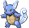

PokeDex
-
BULBASAUR #0001

- Grama
- Veneno
Há uma semente de planta em suas costas desde o dia em que este Pokémon nasceu. A semente cresce lentamente.
-
IVYSAUR #0002

- Grama
- Veneno
Quando o bulbo nas costas cresce, parece perder a capacidade de ficar de pé nas patas traseiras.
-
VENUSAUR #0003

- Grama
- Veneno
Sua planta floresce quando está absorvendo energia solar. Ele permanece em movimento para buscar a luz do sol.
-
CHARMANDER #0004

- Fogo
Tem preferência por coisas quentes. Quando chove, diz-se que o vapor jorra da ponta de sua cauda.
-
CHARMELEON #0005

- Fogo
Tem uma natureza bárbara. Em batalha, ele chicoteia sua cauda de fogo e corta com garras afiadas.
-
CHARIZARD #0006

- Fogo
- Voador
Ele cospe fogo que é quente o suficiente para derreter pedras. Pode causar incêndios florestais soprando chamas.
-
SQUIRTLE #0007

- Água
Quando retrai seu longo pescoço em sua concha, esguicha água com força vigorosa.
-
WARTORTLE #0008
- Água
É reconhecido como um símbolo de longevidade. Se sua casca tiver algas, aquele Wartortle é muito velho.
-
BLASTOISE #0009

- Água
Ele esmaga seu inimigo sob seu corpo pesado para causar desmaios. Em uma pitada, ele se retirará para dentro de sua casca.
-
CATERPIE #0010

- Inseto
Para proteção, ele libera um fedor horrível da antena em sua cabeça para afastar os inimigos.
-
METAPOD #0011

- Inseto
Está esperando o momento de evoluir. Nesta fase, só pode endurecer, por isso permanece imóvel para evitar o ataque.
-
BUTTERFREE #0012

- Inseto
- Voador
Em batalha, ele bate as asas em grande velocidade para liberar poeira altamente tóxica no ar.